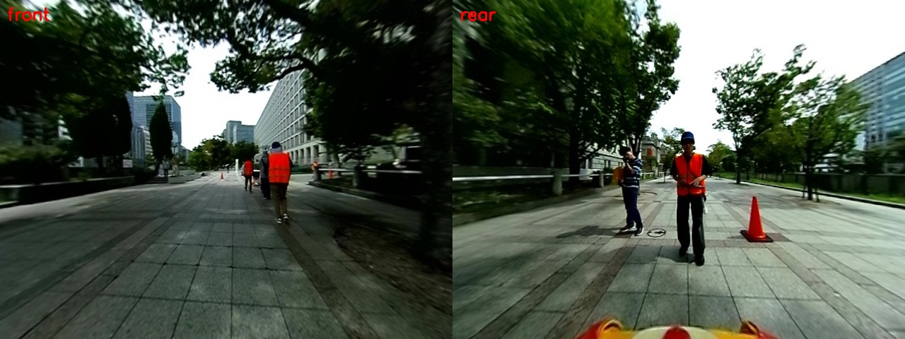
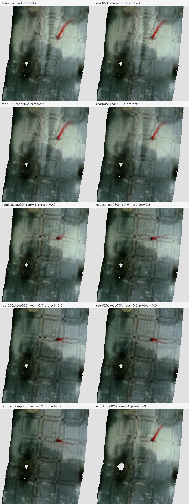
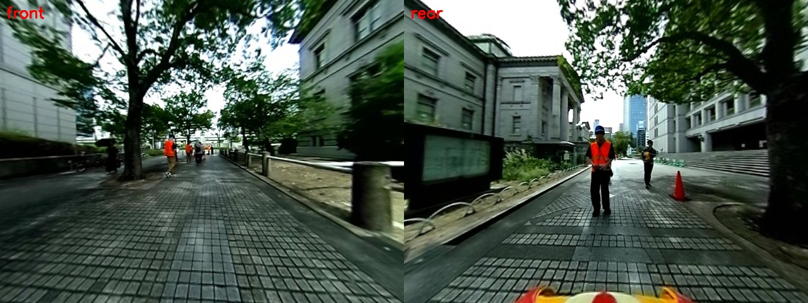
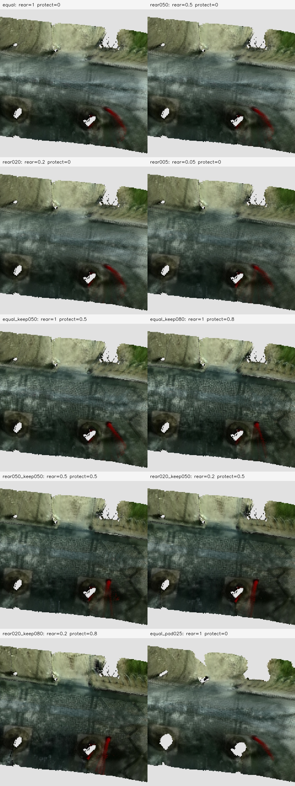
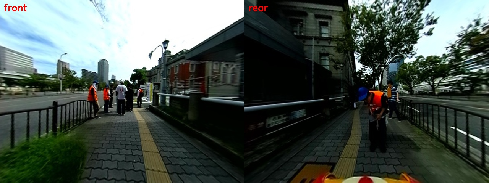
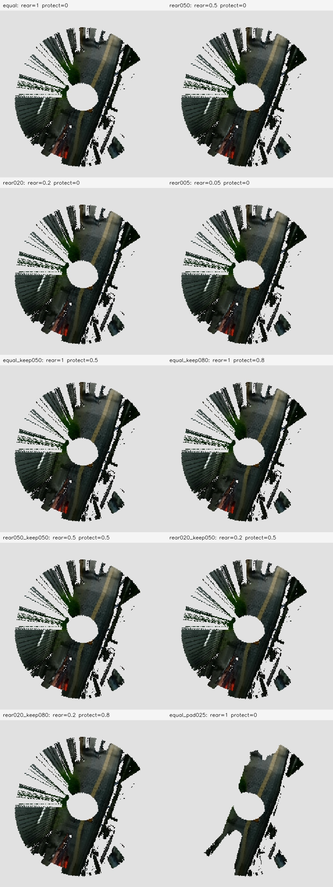
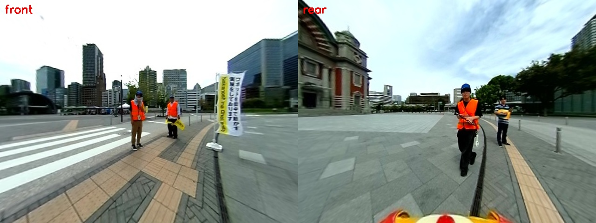
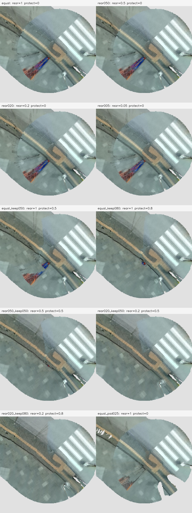

画像は原寸PNGです。拡大して舗装の目地、点字ブロック、人物の色の引き伸ばしを確認してください。A/Bは各区間で同じ画像順・地図原点・画素位置です。
real_both_mapping_20260920_113447_recovered ／ 4区間・10条件 ／ 解像度5cm
過去に見えた最良の品質に対して、半分未満の品質の観測ではそのセルを更新しません。後方からしか見えない新しい場所は取り込めます。方向の切り替えは側方付近で滑らかにつなぎます。
評価用に保留した安定観測とのRGB誤差は、全区間の合計で 15.87 → 8.20（48.3%低下）。観測済みセル数は通常版と同じです。この数値は残像の除去率ではありません。
各区間の画像を一定間隔で融合用と評価用に分け、保留画像を地図には融合していません。枚数は下の区間別欄に記載しています。保留観測で3時刻以上・色のばらつきが小さいセルだけを参照とし、全条件で観測できた共通領域を評価しています。参照は実測の正解地図ではありません。人物を検出して採点したものでもありません。
| 条件 | 後方重み | 最低品質比 | 区間 1500 | 区間 2200 | 区間 3000 | 区間 4500 | 加重平均 | 観測セル数比 |
|---|---|---|---|---|---|---|---|---|
| equal | 1 | 0 | 15.61 | 23.76 | 1.27 | 13.10 | 15.87 | 100.0% |
| rear050 | 0.5 | 0 | 15.13 | 22.55 | 1.27 | 13.00 | 15.35 | 100.0% |
| rear020 | 0.2 | 0 | 14.21 | 20.05 | 1.27 | 12.83 | 14.32 | 100.0% |
| rear005 | 0.05 | 0 | 12.17 | 14.77 | 1.27 | 12.38 | 12.07 | 100.0% |
| equal_keep050 | 1 | 0.5 | 8.29 | 12.15 | 1.27 | 8.91 | 8.98 | 100.0% |
| equal_keep080 | 1 | 0.8 | 7.53 | 10.56 | 3.07 | 7.85 | 8.10 | 100.0% |
| rear050_keep050 | 0.5 | 0.5 | 8.23 | 10.04 | 1.27 | 8.33 | 8.20 | 100.0% |
| rear020_keep050 | 0.2 | 0.5 | 9.16 | 10.29 | 1.35 | 8.95 | 8.77 | 100.0% |
| rear020_keep080 | 0.2 | 0.8 | 9.97 | 10.67 | 3.28 | 9.07 | 9.34 | 100.0% |
| equal_pad025 | 1 | 0 | 11.89 | 21.46 | 1.76 | 11.53 | 13.56 | 91.8% |
融合 52 枚 / 評価用保留 13 枚。左が撮影時の前方、右が後方。


融合 52 枚 / 評価用保留 13 枚。左が撮影時の前方、右が後方。


融合 52 枚 / 評価用保留 13 枚。左が撮影時の前方、右が後方。


融合 52 枚 / 評価用保留 13 枚。左が撮影時の前方、右が後方。


rear_observation_weight:=0.5 min_relative_observation_weight:=0.5
theta_offline_mapping.launch.py に上記の引数を指定できます。座標やこのBAG専用の判定は含みません。後方に人が多い運用の候補として評価した設定で、別BAGでの再現性は未確認です。既定値と既存の全体地図は変更していません。
今回はRGBの比較に限定し、SAM3は実行していません。人物の検出ラベルは使っていません。